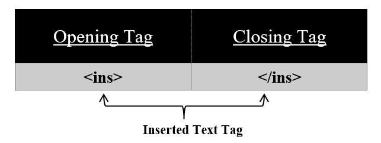

For inserted text use <ins> tag on your HTML page.
Syntax:
<ins>
//content
</ins>
Using this <ins> tag we can insert our text into a document. All the content in between this tag appears to be displayed with an underline. <ins> tag has also its corresponding </ins> tag.